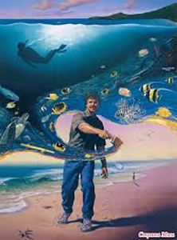
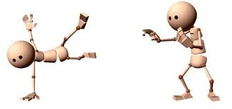
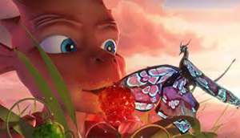

Создание Корабля-Тетара Драконов
Нам повезло. Перед самым началом разработки этой локации мы попали на крупный Архитектурный Московский форум, и там увидели потрясающие необычные макеты Тетаров. Эти макеты врядли когда то будут воссозданы в жизни, но увидев их мы поняли насколько необычнм и разнообразным может быть театральное пространство.
А еще мы поняли что в разработке локации тетара надо обязательно пригласить к себе профессиональных архитекторов из Мархи. И они пришли к нам...! Ребята предложили несоклько концептов кораблей, но самый потрясающий был макет заброшенного корабля, который лежал на боку в скалах и его части - как части старого - становились строительным материалом для нового...! Эта идея безумно нам понравилась и дальше мы принялись за разработку ее с нашими художниками.
Первый поиск и придание природного стиля Драконии кораблю прошел достаточно быстро мы решили приступать к работе в 3д что бы оценить что из наших скечей будет работать в 3д пространстве. Начились поиски и уточнения основной формы корабля. Но самое интересное ждало впереди, надо было придумать механизм работы парусов, а самое главное их форму, потому как делать классические "японские" паруса мы не хотели, нужно было что то свое..
Корабль тетар появляется уже в первой серии нашего сериала, поэтотому скоро его можно будет увидеть в мультфильме...!
Производится набор желающих для прохождения практики на должности аниматора
Стажировка в аниматорской школе "Эйфиора" для желающих со всех городов России! Занятия и практика УДАЛЁННО(*дистанционно), а также в Москве с 5 сентября, 1-2 раза в неделю, во внерабочее, внеучебное время.
- Вы научитесь всему — от азов до создания полноценного анимационного фильма, в том числе:
Большой фестиваль мультфильмов
25 октября - 4 ноября 2019, Москва
При поддержке Министерства культуры Российской Федерации
Стратегический партнер Фонд Михаила Прохорова
Партнер "Фабрики мультфильмов" телеканал Cartoon Network
Партнер фестиваля Студия "Союзмультфильм"
Большой фестиваль мультфильмов – крупнейший анимационный смотр на территории России, который ежегодно показывает все самое лучшее, интересное и актуальное, что происходит в мире анимации.
XIII Международный анимационный фестиваль «Большой фестиваль мультфильмов» пройдёт в Москве с 26 октября по 4 ноября 2019 года. БФМ-2019 – это 400 новых и уже прославленных мультфильмов со всего мира, мастер-классы и лекции, показы с живой музыкой и концерты, мульт-вечеринки и задушевные разговоры про искусство анимации – 11 дней, 50 площадок и 120 уникальных мероприятий.
Дракония.
Сериал "Дракония", это мир, каким бы он был, если бы его населяли Разумные Драконы. При этом их цивилизация переживает очень много проблем которые присущи и нашему обществу тоже. Это теже проблемы связанные с выбором своего пути, с верой в себя и доверия своим друзьям, отношения с родителями, а так же межрассовые и межкультурное взаимопонимание. Все эти и многие другие проблемы мы наблюдаем в мире Драконов и видим как они их преодалевают.
Но Драконы, это все таки сказачные сущетсва, наделенные гораздо большей силой и волшебством чем люди. Мы определяем мир драконии как магический реализм. Магию этого мира нельзя вызвать спомощью заклинания, нельзя просто так взять с собой на борьбу с неприятилем, но ее можно разжечь в себе, и она может прийти в тот самый момент когда она так нужна.
Мир драконов, это мир, где оживают самые неожиданные проявления мира, мира Драконов и стихий.
О нас!

Студия "Эйфиора", это большая обучающая площадка, где люди которые стремились к анимации нашли необходимые знания и умения и сейчас воплощают их в амбициозных проектах и обучают других.
Прежде всего мы ценим красоту и уровень идей и проектов. Будь то авторская анимация или массовая, мы постараемся вложить в нее все лучшее и сделать так что бы это сдвигало привычный взгляд на вещи, передавало красоту и свободу.